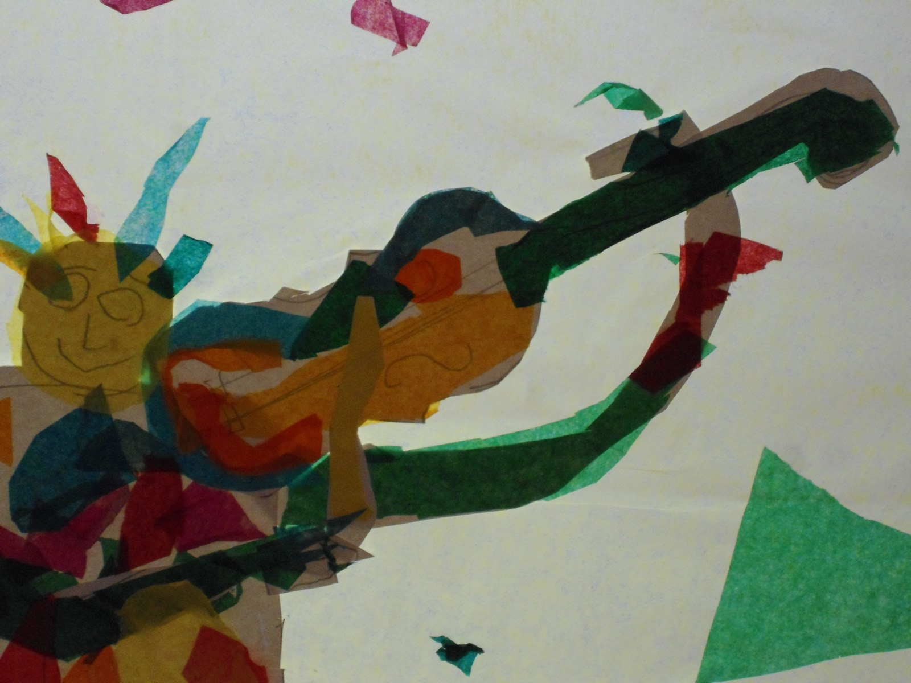
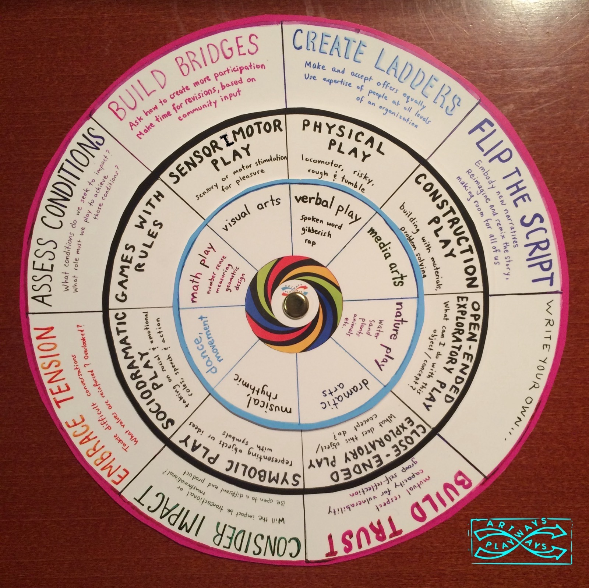
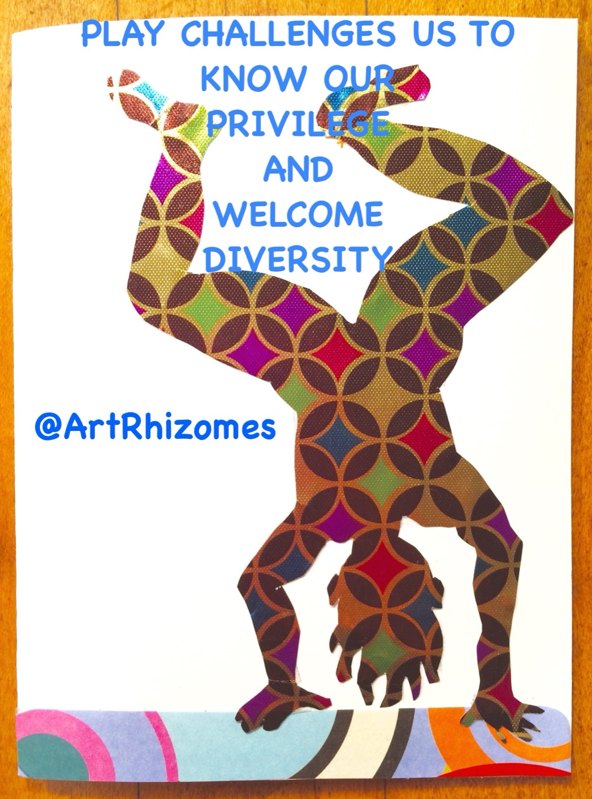

Play-based professional development and multi-arts learning. I co-construct Playshops with educators, youth leaders, organizations, artists and families — using the arts as a way in to, and back to, play.
Play as if your learning depended on it.

Artways Playways addresses our national play deficit by offering professional development and play advocacy across the learning spectrum — in both schools and workplaces. The workshops use multiple arts as a springboard for ways into, and back to, play, spanning the spectrum from free play to guided play.
Every Playshop is co-designed to fit your group. Start with the audience that fits you.
Arts educators, classroom teachers, after-school and early-childhood programs — playful thinking frameworks and arts integration.
See Playshops →Spoken word, slam poetry and embodied art-making to power youth voice and social change.
See Playshops →Administrators and teams reconnect to curiosity, creativity and community in an energized work environment.
See Playshops →Re-learn how to play across creative mediums — improvisation, mindfulness and excavating your play history.
See Playshops →Physical, sensorimotor, constructive, symbolic, social-dramatic play — and the arts woven through all of it. The Play Wheel is the home-made framework at the heart of every Playshop: a way to name, notice and design for the full range of play.
Build bridges. Create ladders. Flip the script. Write your own.


We need more than trauma-informed teaching — we need play-informed teaching that builds the courageous imagination to picture what can be. The arts are a portal to play, and play is a portal to healing and change.
Why play? →Tell me about your group, school or organization, and we'll build a Playshop around your needs.
sumnernicole@gmail.com